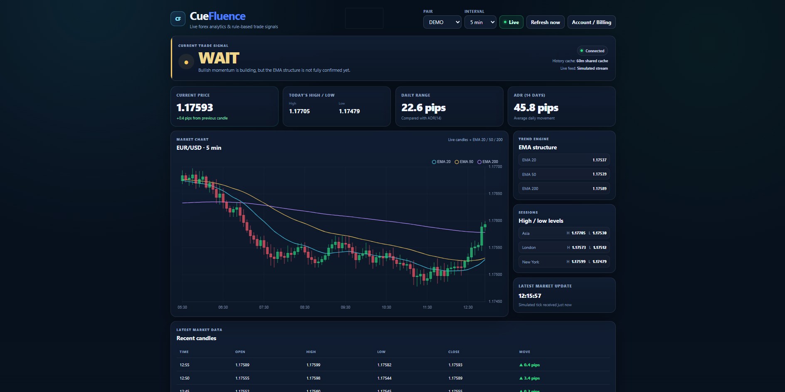
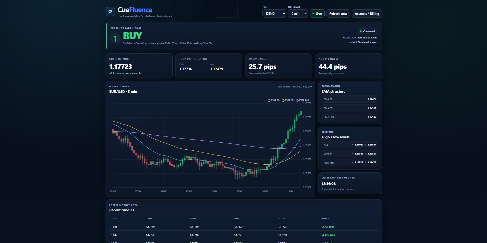
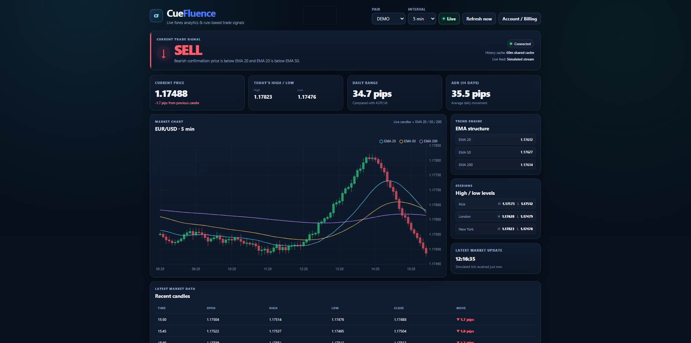

WAIT
CueFluence displays WAIT when the analyzed technical conditions do not yet show enough alignment for a BUY or SELL setup.

FOREX TECHNICAL ANALYSIS TOOL
Simplify forex technical analysis with indicator confluence.
CueFluence combines multiple forex technical indicators into one dashboard to help you understand whether current market conditions favour buying or waiting.
Open CueFluenceWHAT IS CUEFLUENCE?
Forex traders often look at several technical indicators before making a decision. The problem is that those indicators can sometimes provide different or conflicting information, making the overall market picture harder to read.
CueFluence is a forex technical analysis dashboard designed to simplify that process. Instead of forcing you to interpret every indicator separately, CueFluence brings several pieces of technical market information together in one place.
The goal is simple: make technical indicator confluence easier to understand so you can spend less time jumping between indicators and more time evaluating the overall market setup.
CUEFLUENCE DEMO
Watch a quick demonstration of the CueFluence forex technical analysis dashboard and see how multiple indicators are brought together into one simplified view.
CUEFLUENCE DASHBOARD
CueFluence combines forex price data, EMA analysis, Average Daily Range, market-session levels and indicator confluence into a single dashboard.

CueFluence displays WAIT when the analyzed technical conditions do not yet show enough alignment for a BUY or SELL setup.

A BUY state indicates stronger bullish alignment among the technical conditions currently evaluated by CueFluence.

A SELL state indicates stronger bearish alignment among the technical conditions currently evaluated by CueFluence.
CORE FEATURES
CueFluence brings several commonly used forms of forex technical analysis into one dashboard.
Evaluate several technical conditions together instead of relying on one indicator in isolation.
CueFluence summarizes current technical conditions into straightforward BUY or WAIT decision-support signals.
View technical conditions alongside daily-range information and forex market-session context.
TECHNICAL ANALYSIS
CueFluence uses several technical-analysis measurements to help build a broader view of current forex market conditions.
The 20-period Exponential Moving Average helps provide context around shorter-term market direction.
The 50-period Exponential Moving Average provides additional context for the medium-term market structure.
The 200-period Exponential Moving Average provides a broader view of longer-term market direction.
ADR provides context around how far a currency pair typically moves during a trading day.
View market information in the context of the Asia, London and New York forex trading sessions.
CueFluence brings these different pieces of technical information together instead of making you interpret them separately.
INDICATOR CONFLUENCE
Indicator confluence describes a situation where several different forms of technical analysis point toward a similar market interpretation.
Instead of making a decision because one indicator produces a particular result, a trader may look for several technical conditions that support the same general view.
CueFluence is built around this idea. It brings several technical measurements together so that you can evaluate the broader setup from one dashboard rather than checking each indicator independently.
No single technical indicator can describe everything happening in a market. Looking at multiple forms of technical information can provide additional context when evaluating a setup.
HOW IT WORKS
CueFluence processes forex market information and calculates multiple technical indicators.
The indicators are viewed together to help determine whether multiple technical conditions are aligning.
CueFluence presents the result in a simplified format that you can use alongside your own analysis and trading strategy.
BUY / WAIT / SELL SIGNALS
A BUY signal means the technical conditions currently analyzed by CueFluence are showing stronger alignment toward a potential buying setup.
A WAIT signal means the current technical setup does not show enough alignment for CueFluence to present a BUY condition.
CueFluence signals summarize technical conditions. They should not be interpreted as guaranteed predictions of future price movements or guaranteed profitable trades.
ANALYSIS, NOT EXECUTION
CueFluence is not a forex broker and does not execute trades on your behalf.
The application is designed to provide technical market analysis and decision-support information. If you decide to enter a trade, that trade is placed separately through your own broker or trading platform.
This allows CueFluence to stay focused on its main purpose: helping make technical market information easier to read.
WHO IS CUEFLUENCE FOR?
Useful if your forex analysis already involves checking several technical indicators before making a decision.
Helps present multiple pieces of technical information in a more understandable format.
Designed for users who want to reduce the amount of time spent switching between separate indicators and charts.
ACCESS CUEFLUENCE
Access the CueFluence forex technical analysis dashboard directly from your web browser.
FREQUENTLY ASKED QUESTIONS
CueFluence is a web-based forex technical analysis dashboard that brings multiple technical indicators together into a simplified decision-support interface.
CueFluence includes EMA 20, EMA 50, EMA 200, Average Daily Range and forex market-session context.
Indicator confluence occurs when several forms of technical analysis provide similar or supporting information about the current market setup.
No. CueFluence does not place or execute trades. Any trades you choose to make are placed separately through your own broker or trading platform.
A BUY signal means the technical conditions analyzed by CueFluence currently show stronger alignment toward a potential buying setup.
WAIT means the technical conditions currently analyzed by CueFluence do not show enough alignment for a BUY condition.
No. CueFluence provides technical market analysis and decision-support information. It does not provide personalized financial advice and does not guarantee trading results.
No. CueFluence is a web application and can be accessed directly through a supported web browser.
READY TO EXPLORE?
Open the CueFluence web application and explore the technical-analysis dashboard for yourself.
Open CueFluence